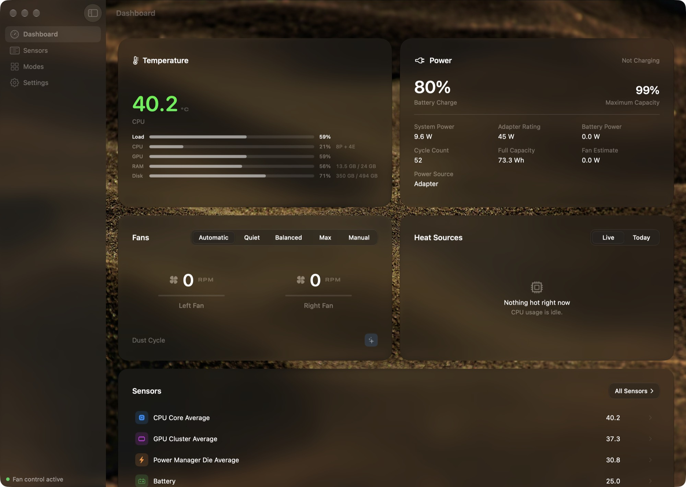
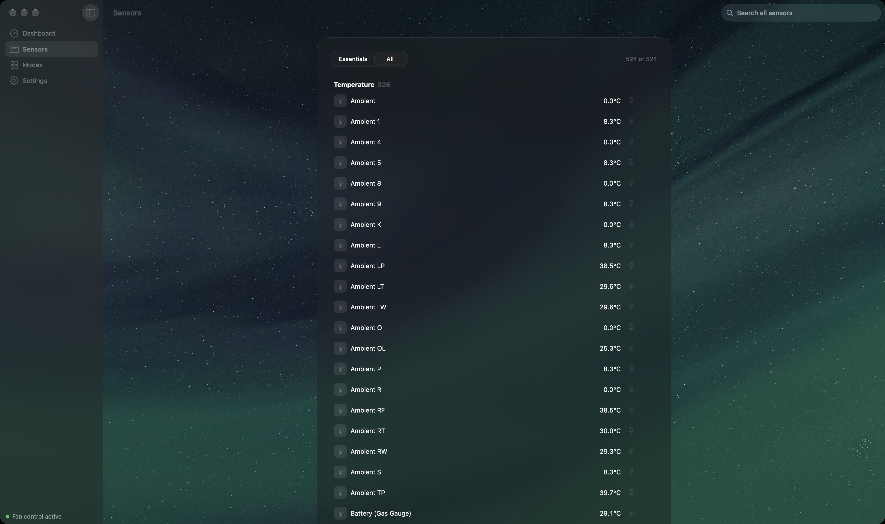
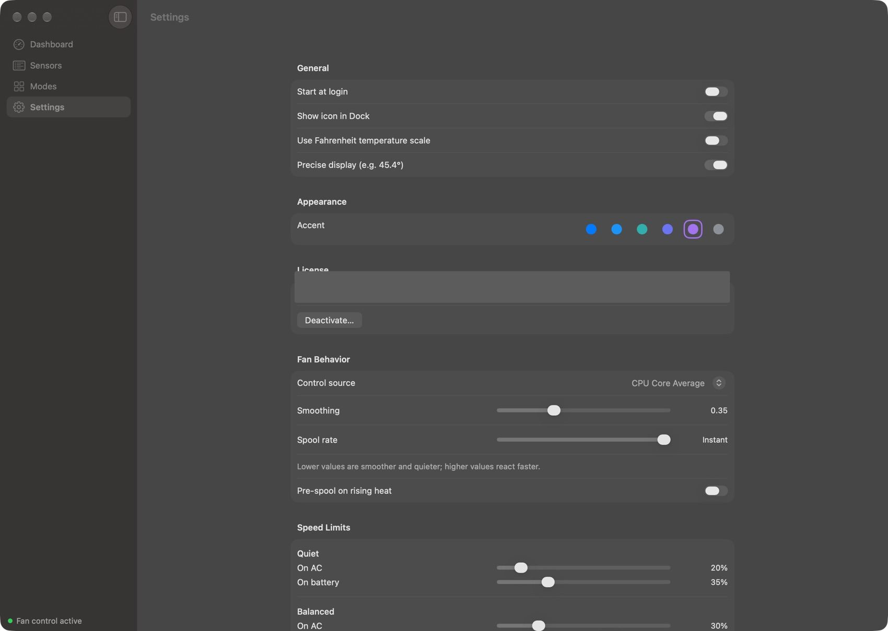
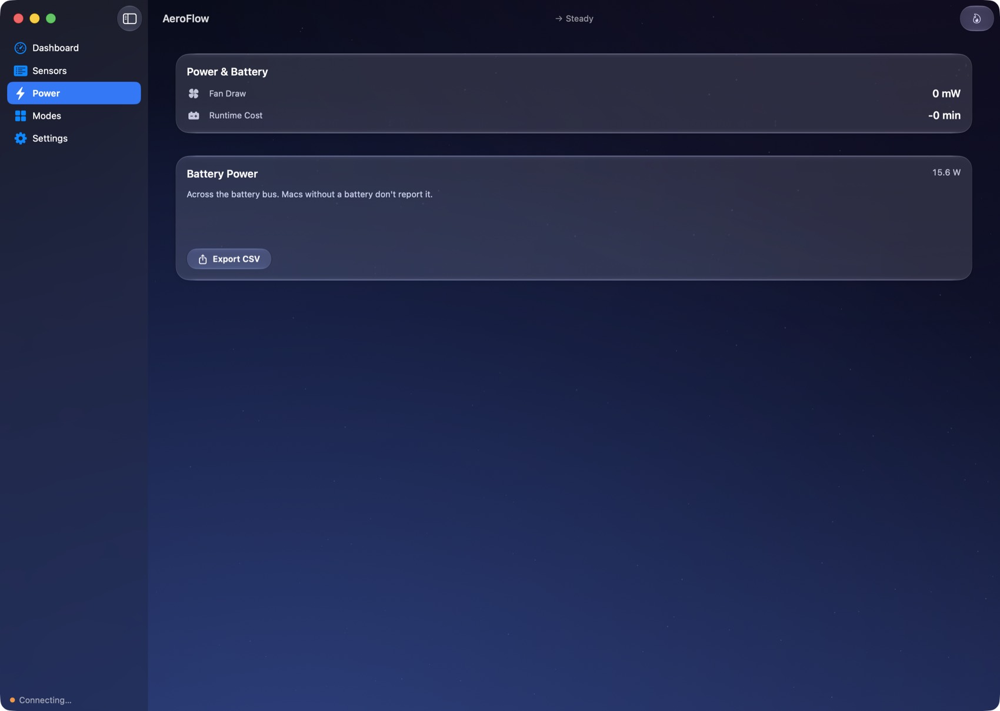

AeroFlow reads every thermal sensor your Mac exposes and gives you real control over its fans, whisper-quiet, balanced, or full blast. Native, precise, and safe by design.
Monitoring free · One-time · Two Macs · Apple Silicon & Intel · Signed & notarized

macOS picks your fan curve for you and never shows its working. AeroFlow shows you every reading it has, and lets you decide.
CPU, GPU, battery, power and more, all read straight from the SMC and updated continuously, with rolling history on any sensor you open.
Quiet, Balanced, Max, or a fixed manual speed. Turbo for instant maximum cooling, with a cooldown timer so you can't leave it running.
A fan that spins at your real fan speed, and the temperature you care about, so you know what your Mac is doing without opening anything.

Fan control makes people nervous, and it should. AeroFlow is built so its failure modes are boring.
Real Liquid Glass on macOS 26, native materials before it. Six ambient backdrops if you want depth, and a frost slider if you'd rather not.


No subscription, no upgrade pricing, no account to create. Monitoring is free forever. The licence unlocks fan control.
Payment, VAT and invoicing handled by Lemon Squeezy, our merchant of record. Apple Pay accepted.
No. Download it and every sensor reading, the menu-bar readout, alerts and history are yours free, forever. The licence unlocks control of the fans.
Any Mac running macOS 14 Sonoma or later, Apple Silicon or Intel. On macOS 26 the interface uses true Liquid Glass; on earlier systems it falls back to native materials. Fan control needs a Mac that has controllable fans: a fanless MacBook Air will show sensors only.
AeroFlow never overrides macOS thermal safety, clamps every write to the limits your hardware reports, and hands the fans back to Apple's automatic control if anything goes wrong at all, including quitting the app, a crash, or a lapsed licence. Temperature monitoring keeps running in every one of those cases.
You get a licence key by email. Paste it into the Activate window once per Mac. It works on two Macs, and there's a 14-day offline grace period so travelling never locks you out.
AeroFlow checks for updates itself and installs them in place, cryptographically signed and verified, so you never have to re-download from a website. Updates are included with your licence.
Writing fan speeds needs a small privileged helper, which macOS quite rightly makes you approve. You approve it once, in System Settings, and never again. It only ever writes fan registers.
Within 14 days, write to us or to Lemon Squeezy and it's refunded. Keys from refunded orders are disabled.